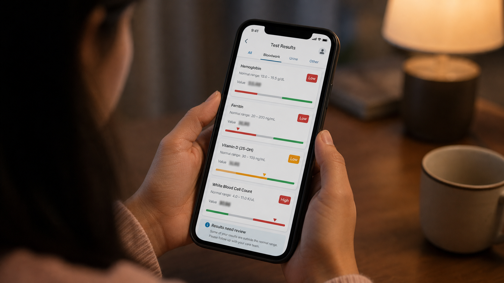
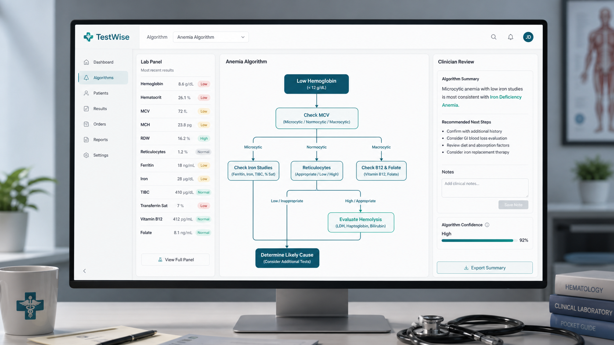
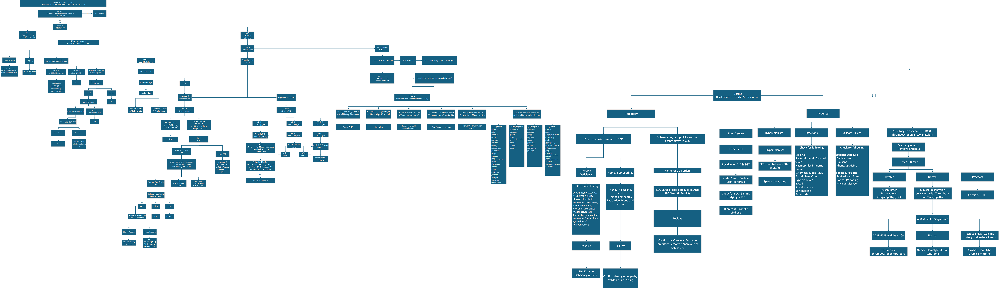

VC demo story
From confusing labs to a clear next step
Investor demo
Maya's lab portal shows red numbers. TestWise shows the next best step.


AI-generated plain-language brief
Maya's Parent Brief
Before
Before TestWise
After
After TestWise
One Engine, Many Clinical Algorithms
VC takeaway: anemia is the demo, the platform is pathway-to-product conversion.
Maya's Records
Loading patient records
Select a record
Synthetic Maya patient record
Pathway Result
Awaiting run
Recommended Next Step
Anemia Flowchart Reference
Expert pathway powering Maya's staged anemia workup

Flow Segments
How this demo uses the chart
Demo Readiness
Maya's chart is staged, traceable, and clinician-reviewable
Patient Record Controls
How the demo keeps the chart realistic without real PHI
Cloud Target
IAD regional app placement
Release Gates
Current build checks